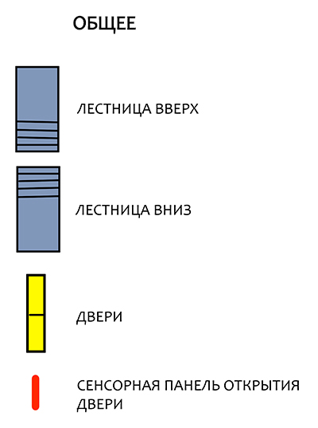
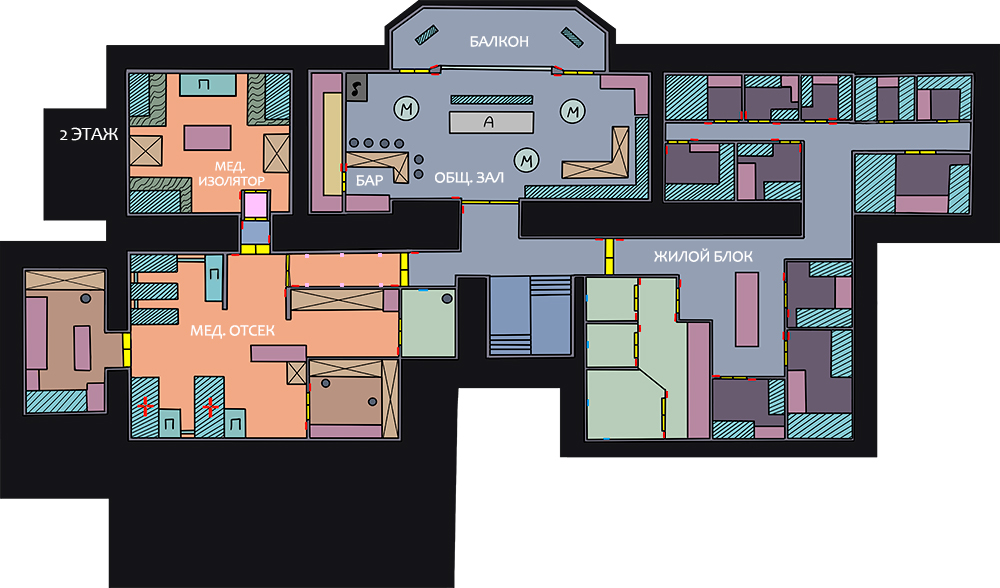

База: уровень 2
Второй этаж базы.
Именно здесь обитатели станции проводят больше всего времени (и я не про жилые отсеки или мед.блок...).
Именно здесь обитатели станции проводят больше всего времени (и я не про жилые отсеки или мед.блок...).
Уровень доступа: смешанный (служебные помещения требуют допуск).
Для просмотра на экране смартфона рекомендуется использовать альбомную ориентацию.
Чтобы посмотреть местоположение объекта кликните на его название ниже:


Дополнительная информация доступна при клике на подсвеченный объект или иконку



 Посещение по назначению врача или в случае крайней необходимости.
Пожалейте себя, не злите медика.
Посещение по назначению врача или в случае крайней необходимости.
Пожалейте себя, не злите медика.

1
2
3
4
5
6
7
8
9
10
11
Балкон
Устроившись на платформе, можно наблюдать за ревущей и истекающей слюнями техноорганической живностью
снаружи базы.
Сектор сан.обработки
Через эту экзекуцию проходит каждый, кто намерен попасть в мед.отсек,
так что трижды подумайте, надо ли оно вам.
Мед.отсек
Зачастую здесь лечат, иногда калечат, в общем, место так себе для отдыха. Сан.отсек
В общем-то, та же экзекуция, что и при входе в мед.блок, но в более комфортных условиях.
Ординаторская
Тут, между прицельным метанием гаечных ключей и ремонтом нерадивых пациентов, отдыхают медики.
Кабинет глав.врача
Крепость уединения главного медика всея базы.
Мед.изолятор
Если во время эксперимента в лаборатории или вылазки снаружи что-то пошло сильно "не так", вы попадете сюда.
И выйдите ой как не скоро.
Сан.отсеки
Отдельные кабинки для уединения. В смысле, чтобы смыть с себя многолетний слой пыли.